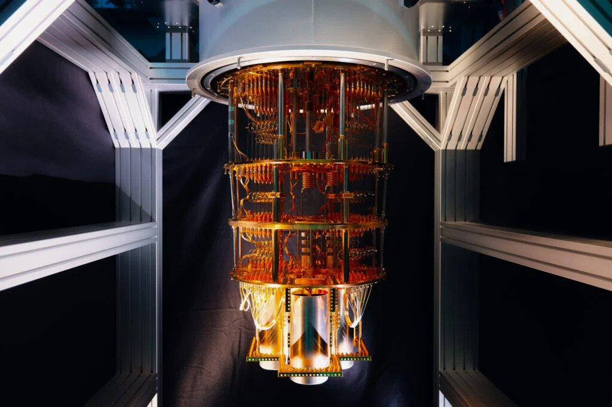

L'informatique quantique est un domaine particulié car, il est l'un des domaines encore très expérimental en informatique. Il est l'une des tendances du momment vû qu'il est utiliser dans la plupart des grandes compagnies d'aujourd'hui. Le quantique est surtout utiliser dans le domaine du calcul à grande échelle. Le But de l'informatique quantique est d'utiliser la mécanique quantique pour l'utiliser en informatique dans des ordinateurs. Comme Celui d'IBM qui est le premier ordinateurs quantique à circuit vendu commercialement en janvier 2019. Depuis Décembre 2020, un ordinateurs quantique chinois à battue le meilleure super ordinateur du monde , ont parlent alors de la suprémacie quantique.
